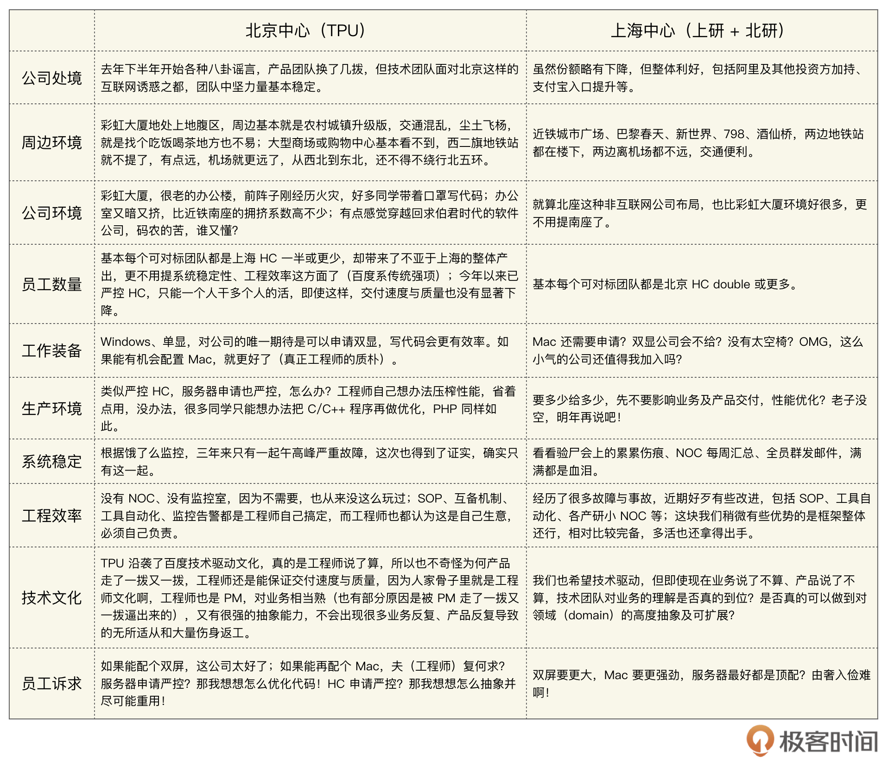

- 00 篇首语 张雪峰：我参与的饿了么成长轨迹中，这些事需要反思.md.html
- 01 收购百度外卖：“土八路”收购“正规军”.md.html
- 02 饿了么上海本土团队和百度外卖北京团队的冲突.md.html
- 03 不够果敢带来的内耗.md.html
- 04 “戏剧性”的裁员，反思组织融合之难“难于上青天”.md.html
- 05 职业成长：从校园到职场的蜕变.md.html
- 06 拆解CTO：CTO的岗位职责.md.html
- 07 对程序员来说，自由价更高.md.html
- 08 50X增长：管理35到1800人团队的难题.md.html
- 09 如何用人？.md.html
- 10 管理的不足：不团建，管理不到毛细血管.md.html
- 11 CTO要给自己找backup.md.html
- 12 CTO的艰难时刻：差点引咎辞职.md.html
- 13 大的决策与难做的决策.md.html
- 14 不够坚定：异地多活没有一步到位的遗憾.md.html
- 15 兴趣与个人认知.md.html
- 捐赠
02 饿了么上海本土团队和百度外卖北京团队的冲突
极客时间：我看过当时饿了么和百度外卖发的组织架构联合的通知，一共6项任命，有4项是和技术有关的，这是你们稳定百度外卖技术团队的手段吗？
张雪峰：对。因为百度外卖收购价格差不多就8亿美金，离他们原先估值差很远，相当于除以3~4了，期权一下子就贬值了，所以他们其实是需要安抚的。最主要安抚的倒不是业务团队，主要还是安抚技术团队。有些同学说，钱不是万能的，但至少是对他的尊重，这个有一定道理。
回过头来讲，说直白点，当时稳定团队你至少从钱上要表现出诚意。说个小插曲，在阿里收购我们之后，有一天，新的CPO说了一句话，从来没见过像饿了么这样的公司收购一个团队，给出这么好的补偿方案。
极客时间：什么补偿方案？
张雪峰：我们当时一是给兑换期权，应该不是完全1:N，但更重要的是我们给了现金补偿。当然现金补偿是有限制条件的，比如说一年内不能离职，逐月发给你，相当于就锁定一年不要走，当时这个策略还是相当有效果的。
在宣布收购之前，我们内部其实有激烈讨论，我们要商量Announcement上写什么，其实要解决的问题很简单，就是看给北京团队什么地盘，因为钱的尊重问题解决了，接下来和钱一样重要的就是地盘尊重问题了。从业务上讲，大家都是重叠的，也都知道业务很好说，就是先不重合，比如北京以百度外卖销售为主、上海以饿了么销售为主，还是维持现状，大家不变就好。
但是技术团队，我要提前考虑起来，因为我要留住这么多的核心技术人员，其实这一点上我跟公司有些分歧，但最后CEO、CPO他们还是支持了我的建议。
我提了一个比较激进的方案。这也是后来上海同学可能心里会感觉有一些失落的地方吧，我把两个很重要的团队：新零售和物流的一号位都给了北京。
关于新零售，我们原来也在做，其实这个是饿了么首先做出来的，就是可以在商超买东西，不光买吃的，还能送卷筒纸，送饮用水，送药，还有送充电线，我们手机充电线一直卖的很好，所以我们叫新零售，现在饿了么和美团都有。在这块业务上，两边都差不多，都有一摊。反正我们开电话会议讨论了很长时间，后来公司也是冒一定风险同意了我这个方案，就是把新零售、物流的一号位给北京的同学。实际上，新零售不止一号位，连整个技术团队都交给了北京。
后来百度的同学也觉得很惊讶，就感觉居然能够给到我们这样的一个地盘，这个可能比钱更重要，我是这么想啊，但实际不一定，没有钱的尊重，可能都走不到地盘尊重这一步。他们的惊讶在于，认为这是根本不可能的，就是当时没有这样的期望值，觉得能不血洗已经不错了，也做好走人的准备了。
极客时间：那上海的新零售团队呢？
张雪峰：后来我们就准备把上海的新零售取消，当然这些同学我们会去安置，当时也走了一些人，事后把整个新零售技术线，全部交给北京，上海团队就等于Close掉了。
还有更重要的是，我们把物流一号位经过讨论也交给北京了。虽然两边都有物流团队，但一号位大家是非常在意的，你交给北京很多人就会解读是北京物流做得更好，但其实不完全是这样。这两项任命，就相当于把上海的地盘剥离了很大一块。
上海物流团队的人数跟北京相比还是多的，因为一号位给了北京，上海那个Leader差点离职，他说凭啥？他说你这不“丧权辱国”吗？但是从这个谈判来说，你收购了就是你的人，这不是“丧权辱国”。所以我当时坚持做了这件事。
极客时间：为什么要这样坚持？
张雪峰：为了留住北京这个团队，我不管商业上怎么样，Mark给我两个目标，一，留住技术团队；二，业务上做融合，这个不全是我的目标，后来我们空降了一个CEO过去。所以在我能力范围内，用我当时能平衡好的方式，换句话说，即使上海团队有诸多不爽，但我能控住大盘，就这样基本留住了北京技术团队。
极客时间：上海的同学有说过，觉得你太照顾百度外卖的人了，他们其实有点委屈。
张雪峰：是，准备收购的时候，我去过北京，回去后跟上海同学说起，确实有点数落上海同学的味道，我说你们看看你们所在的高级写字楼，下面就是地铁，周围商业繁荣。你们再看北京的同学，在上地办公，四街五街周边，简直就是五线乡镇感觉，最多就是有几栋高楼的乡镇。
我说我在那边骑自行车，尘土飞扬，你们看看百度外卖同学，天之骄子啊，人家技术那么强，在那么恶劣的环境，人家把百度外卖做得那么好。我当时还专门做了一张表格，对比这两个团队，给上海同学们这样说。
但后来上海同学还是怨气很大，感觉我太照顾北京同学。因为他们跟北京同学接触之后，去过上地五街之后，就感觉没你说的有那么多土、外面环境那么恶劣啊。当时链家也在那，隔得很近嘛，就感觉楼都挺不错的。
上海同学说我偏心，还有一块跟Hackathon有关。饿了么每年都会举办一次Hackathon，百度外卖加入进来后，我们要看是在北京还是上海进行决赛，当然老员工们都希望在上海，后来我坚决反对，就拍死了，说必须在北京，你们的差旅费我跟公司去搞定。差旅费并不便宜，因为大部分是上海这边的人，上海参赛的人多，所以大家很不爽。
大伙说我偏心，还有一个细节：每天参赛团队都要提交代码，每天刷评分，只要百度外卖同学上来，我就会在群里鼓掌，上海同学我是一概没有的，类似于这种。在会上我也说人家才多少人，你们丢不丢人，你们是做基础设施的，人家百度外卖的同学都是做业务的，他们做中间件的参赛很少。
回头看，决赛到北京，其实有点劳民伤财，但对于南北一家亲以及两边团队的后续融合，我并不后悔。这方面我们很舍得投入，我也感谢公司，这一届比赛在组织上我也是做了很多努力，有些地方我比较独断专行。
极客时间：你刚说到对两个团队的对比，还做了一张表格，都比较了什么？
张雪峰：我可以发给你，这张表里，百度外卖北京中心叫TPU，技术就是T（Technology），P（Produce）是生产，U就是是UED，它们是合在一起的，所以叫TPU。收购百度外卖前，我们有上海研发中心和北京研发中心，当时饿了么的北京研发中心在望京，由史海峰负责。

这个表格里，可能少数也有夸张成分，就是想和饿了么同学讲包容、换位思考。
极客时间：你觉得百度外卖做的还是很不错的。
张雪峰：其实针对我们外卖行业，我一度也怀疑是个伪需求，真正把伪需求这个“伪”抹掉的，就是百度外卖，因为他们开始做白领市场。
我们和美团一开始都没意识到这个，就做高校的生意，因为对于高校学生来说，培养习惯就一点：价格，但价格恰恰是商业模式双刃剑，尤其是伤害远超过它的收益，所以不能只靠价格血拼。在上海，高校周围也有一些商业区，我们去扫楼，那个商业区的楼是很难扫的，所以我们当时感觉白领市场肯定做不起来。
我们感觉白领看不上外卖，因为那时候还没有现在这么精美的包装，你现在看很多火锅外卖都很精美的，包装就值这个价。但那时候外卖都是白盒子，还被人吐槽说你们造成环境污染。所以我们跟美团就在高校硬干，你低一块钱，我少5毛钱，就血拼，没啥奇招。当然了，全国大网下的无数区域网格精细化运营，极其考验组织能力、运营能力，不是有钱就能砸出稳定市场份额。
外卖一开始做高校市场是绝对亏的，如果我们一直做高校一定死无葬身之地。百度外卖的逻辑其实蛮有道理的，我认为整个行业应该感谢百度外卖。百度外卖做白领，虽然还是亏损，但一下子找到了商业模式，因为客单价上去了。
我跟你说，开餐饮是很苦的，虽然毛利是有50%甚至60%，但是房租、人员成本都是很大开销，所以商户是比较欢迎让别人去配送，就是不要让他们自己去配送，他们想人越少越好。房租和人员成本这两个去掉，之后的毛利可能只有20%甚至15%，另外，平台还有费用，比如：佣金、物流、广告、营销等等。
其实饿了么本质上跟携程是一样的，就是抽佣，但携程客单价多高？虽然机票是薄的，但一般用携程订机票的有相当比例会用携程订酒店。度假就更高了，上万都可能。所以客单价真的是决定命运。你总要找到商业模式，要赚钱的，你可以现在亏，但不能看不到尽头的亏。
一个商业的正循环，一定是要有持续、合理的需求，确实C端用户能接受外卖，有这个需求。我自己刚开始感觉外卖可能是伪需求，所以我这人做商业大概率一败涂地。包括Mark已经是非常有商业头脑了，但是他一开始也没有铺开做白领。因为白领客单价上去，意味着补贴也要上去。一开始肯定是要砸钱，刚开始，白领砸的钱可能更多。
© 2019 - 2023 Liangliang Lee. Powered by gin and hexo-theme-book.